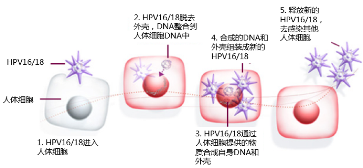

一张图告诉你：宫颈癌与HPV的前世今生
HPV与宫颈癌之间究竟有怎样的关联？得了HPV是否一定就会得宫颈癌？
面对HPV与宫颈癌之间扑朔迷离的关系，女孩们总是急切地想弄明白。
憋着急，今天我们就通过简单的一张图带你了解宫颈癌与HPV的前世今生。
HPV16/18：不得不防的爆款病毒
HPV有很多类型，而其中HPV16/18是高危HPV中的“爆款”。它们与全球70%以上的宫颈癌相关，在中国这个数字更高达84.5%。感染了爆款HPV，就有可能发生癌前病变和宫颈癌。
更常见的HPV 16 vs 更可怕的HPV 18
不同类型的HPV导致不同类型的宫颈癌。约七八成的宫颈癌为鳞癌，主要由HPV16感染引起；另外一两成为腺癌，主要由HPV18感染引起。这两款爆款高危HPV中，HPV16比HPV18更常见，但HPV18的致癌作用比HPV16更大。
10年磨一癌
如果不幸感染了HPV 16/18，辣么女孩的未来可能会面临3种可能
1） 出现慢性宫颈炎；2）发展成癌前病变；3）发展成宫颈癌。
而从慢性宫颈炎发展成宫颈癌大概需要10年时间。也就是说，当发现有宫颈癌时，其实在10年之前甚至更早就早已感染了HPV。
侵入人体组团开黑

侵入身体的HPV16/18，首先会脱掉引人注目的病毒外套，与正常人体细胞DNA中结合。通过人体细胞提供的物质，合成自身DNA和外壳，组装成新的HPV16/18混淆视听。不断释放新的HPV16/18去感染正常人体细胞。
终极宝典：预防为先
HPV16/18如此可怕，简直吓死宝宝了。但，只要我们进行疫苗接种预防，就可以降低至少70%患宫颈癌的可能性。有神功护体，区区HPV16/18奈我何？